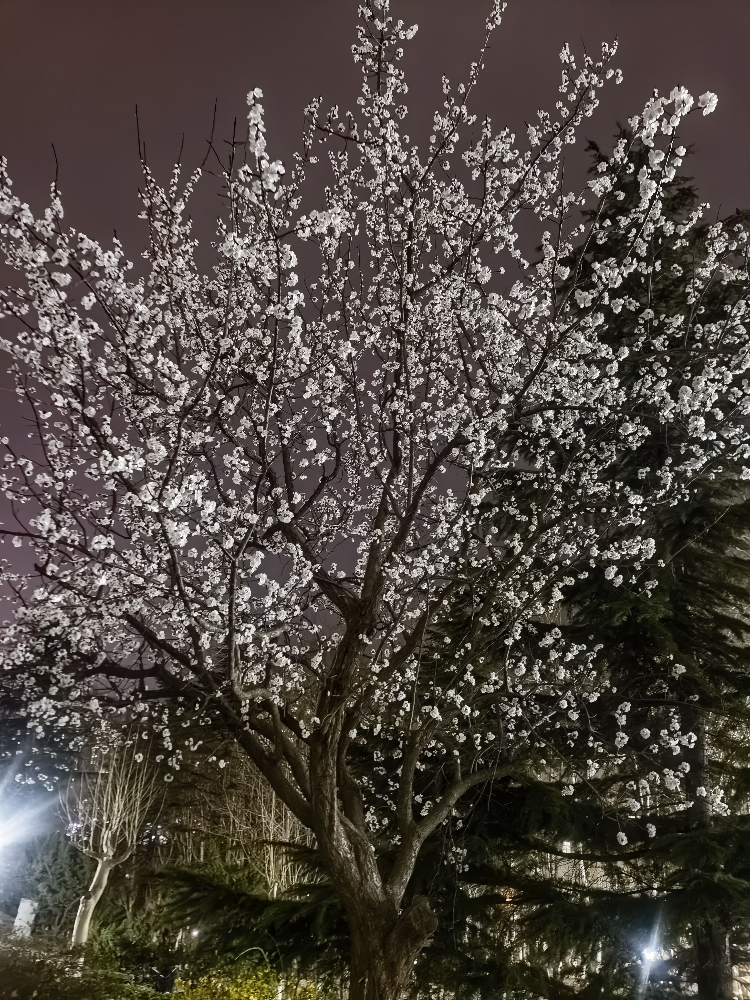
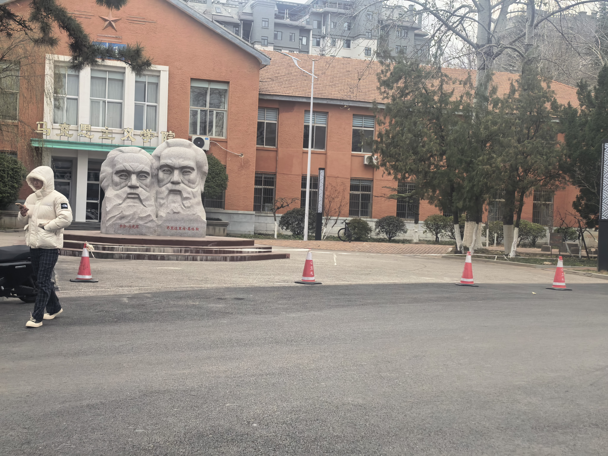
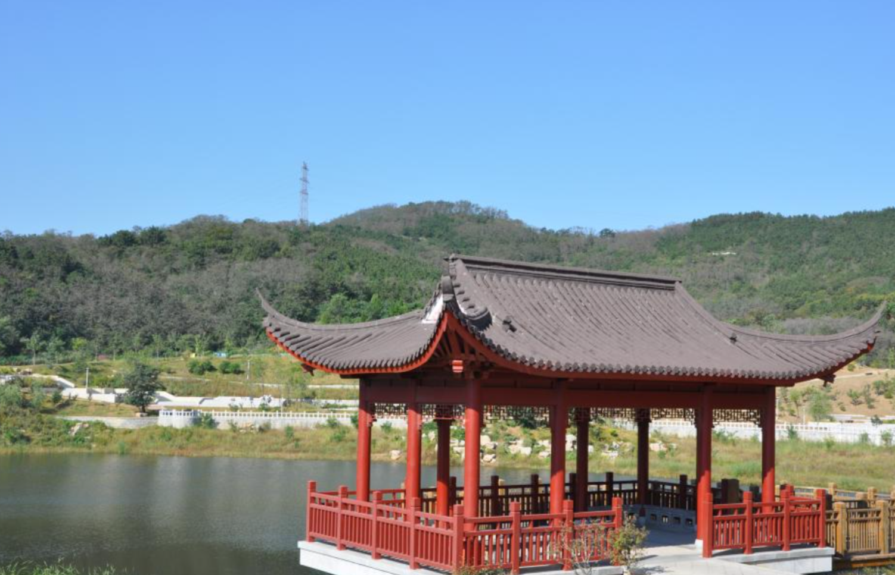

春日的鲁东大学，是一场自然与人文交织的浪漫盛宴。夜幕下的校园里，繁花满枝的花树静静绽放，莹白的花瓣缀满枝头，在夜色中宛如缀满星辰的枝头，温柔又静谧，为春日的鲁大添了几分朦胧的诗意。
校园的梧桐大道更是春日里的标志性风景，高大的梧桐树抽出嫩绿新芽，层层叠叠的枝叶交织成浓密的绿冠，阳光透过叶隙洒下斑驳光影，铺满整条道路。行走其间，春风裹挟着草木的清香拂面，嫩绿的枝叶在风中轻轻摇曳，与满树繁花的景致相映成趣，尽显春日的蓬勃生机。作为承载百年校韵的学府，鲁大的春景不仅有自然的鲜活，更有人文的厚重。牡丹园里繁花初绽，与春日的梧桐花景遥相呼应，漫步校园，既能感受繁花满枝的柔美，也能在绿树成荫的大道上，邂逅青春与历史交融的独特韵味。春日的鲁东大学，每一处风景都藏着春日的温柔与生机，尽显校园独有的春华之美。

这是镌刻着《鲁大赋》的黑色碑墙，由贺宗仪撰文，字迹工整庄重。碑文以凝练文辞追忆齐鲁大学校史，赞颂办学成就与育人理念，提及 “树蕙冶性”“德智体美劳五育并举” 等，尽显学府文脉底蕴，碑前绿植点缀，整体氛围肃穆厚重，承载着鲁东大学的精神传承。
画面展现鲁东大学马克思主义学院外景，红墙建筑风格沉稳，门前矗立马克思与恩格斯的双人雕塑，醒目标识着学院名称。建筑细节规整，周边场地开阔，搭配交通锥与行人，尽显校园日常气息，红色建筑与雕塑呼应，彰显学院鲜明的学科特色与精神内核。
这是一处江南风格的临水亭台，朱红亭柱与围栏搭配灰瓦飞檐，造型典雅精致。亭子立于湖水之畔，后方是植被繁茂的青山，澄澈蓝天为背景勾勒出清新意境。红亭与绿水青山相映成趣，尽显自然之美与中式建筑的雅致，是休闲观景的惬意之地。


